- Mahidhar C
"Music is not the notes, it's the distance between the notes"
-- Some random dude.
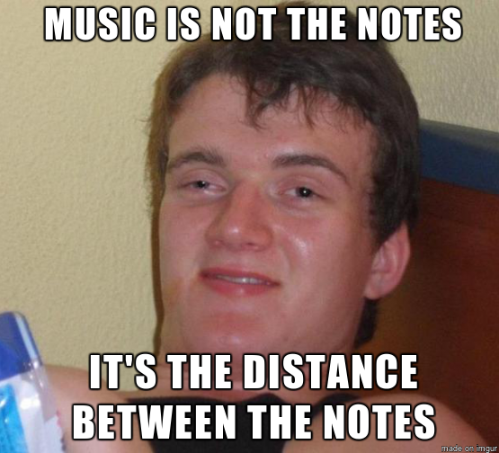
Visual Spectrum
"Disadvantages"
- Limited to just one "octave"
- No simultaneous perception of individual and multiple sensory elements
But at the end of the day I can't believe I'm stupid enough
to compare my eyes to my ears. :P
Both audio and visual spectrums are continuous.
We need to extract discrete points to make it useful for us.
Colors in the visual spectrum for art.
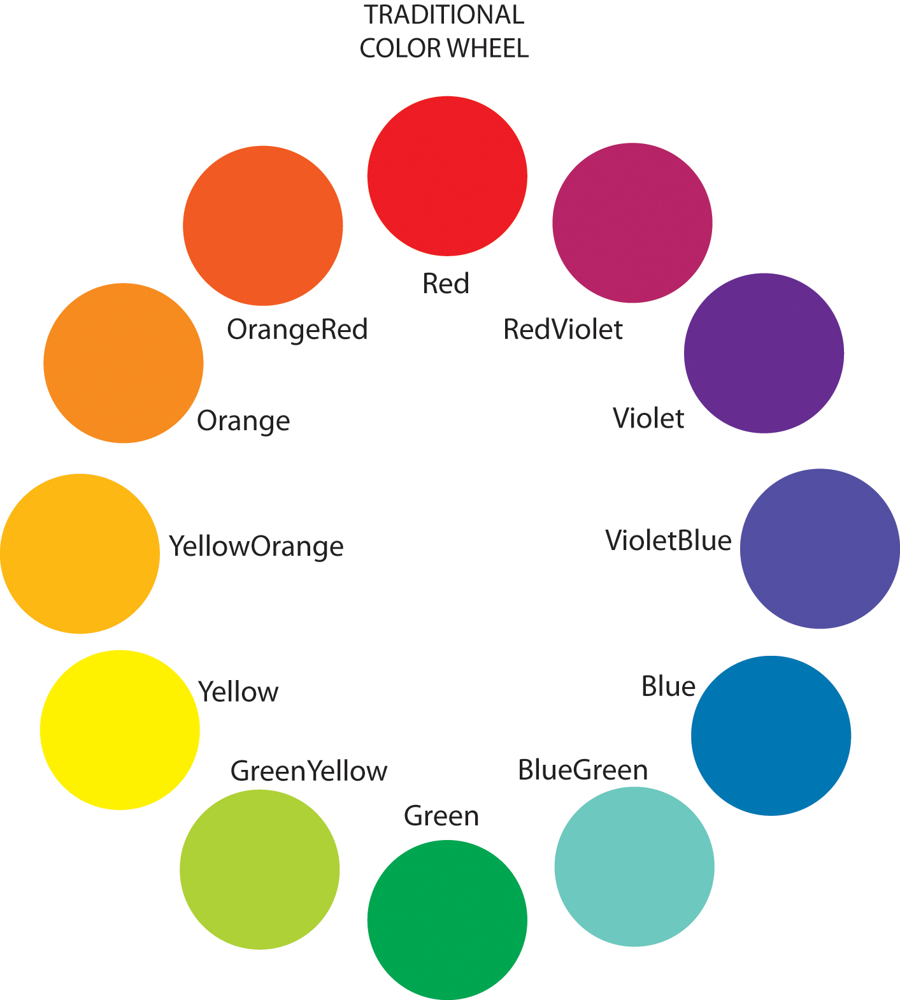
Notes in the audio spectrum for music.
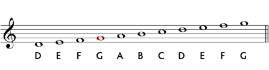
Buuuut... how do you figure out which points to use?
I probably sound high right now.
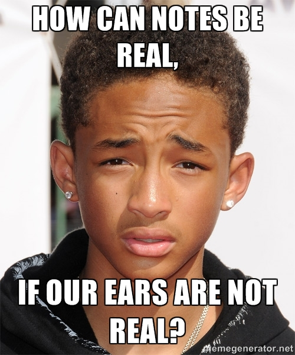
How do we choose which frequencies can be used as notes?
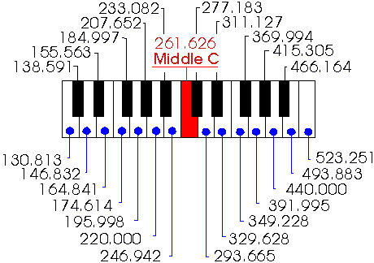
How do we figure out where to place the frets on a guitar?
How do we figure out where to drill the finger holes on a flute?
Answer: Natural harmonics and temperment!
Natural harmonics
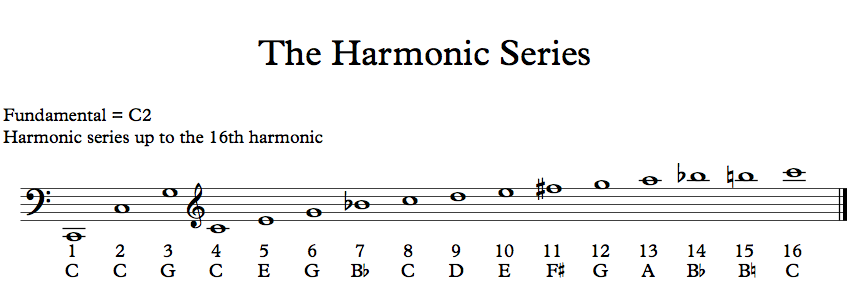
Temperment
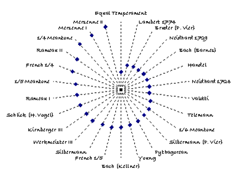
Pythagoras Tuning
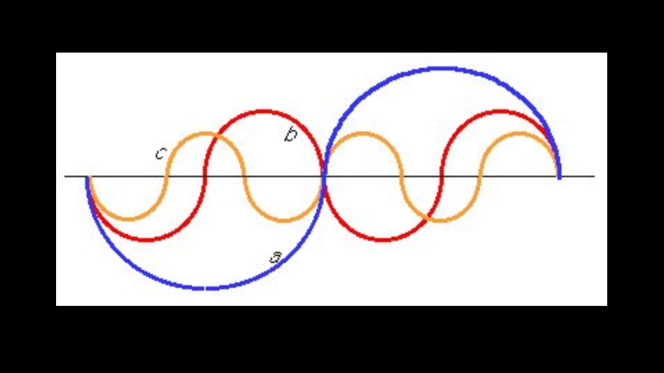
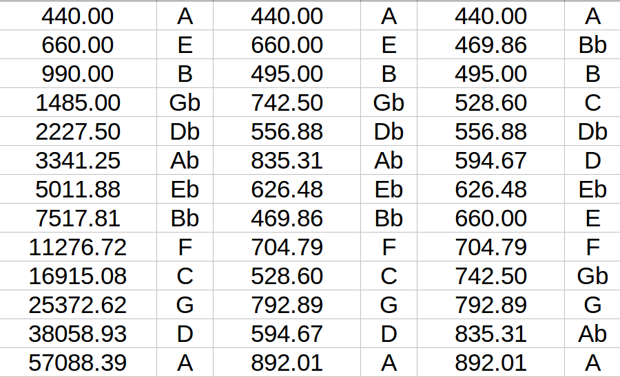
Pure:
Pythagoras:
Just Tuning
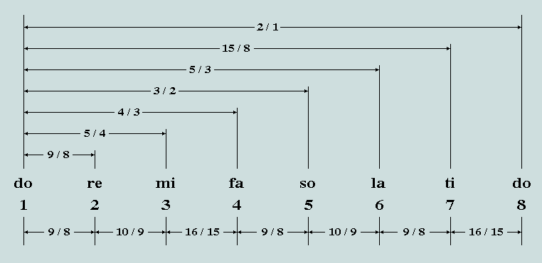
Bach

WARNING: MATH!!
Equal temperment formula
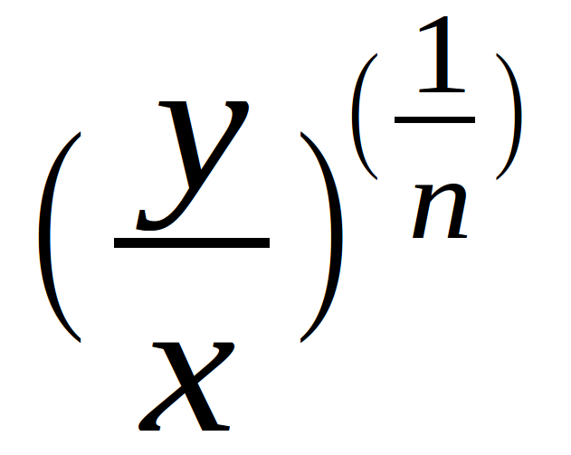
What we use
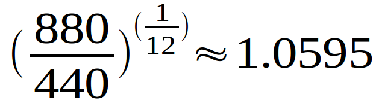
Comparison between Equal and Just temperments
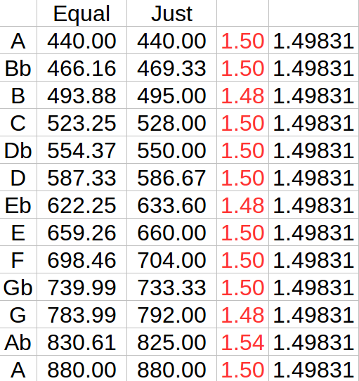
The Well Tempered Clavier
Two books of 24 pieces each in all possible keys!
Summary
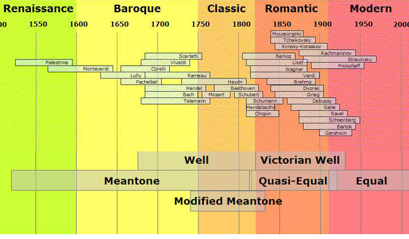
Thank You!
Questions?
mahidhar.c@gmail.com
mahidharc.github.io/bachpresentation